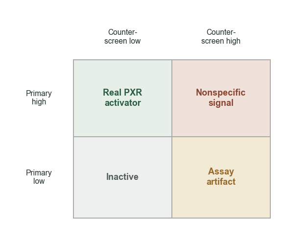
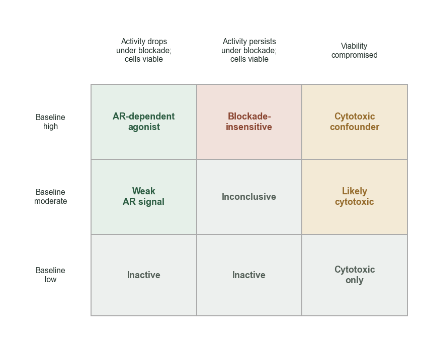
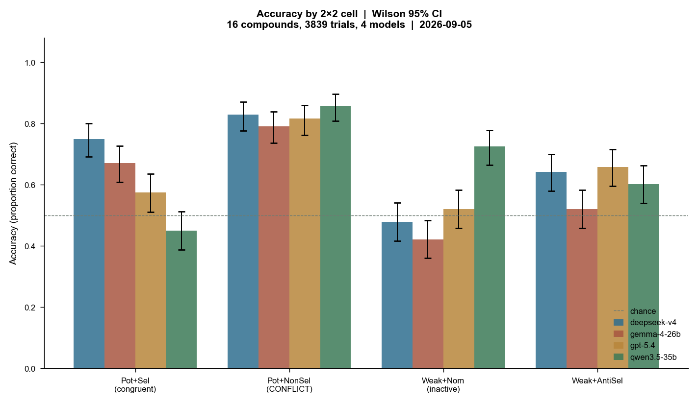
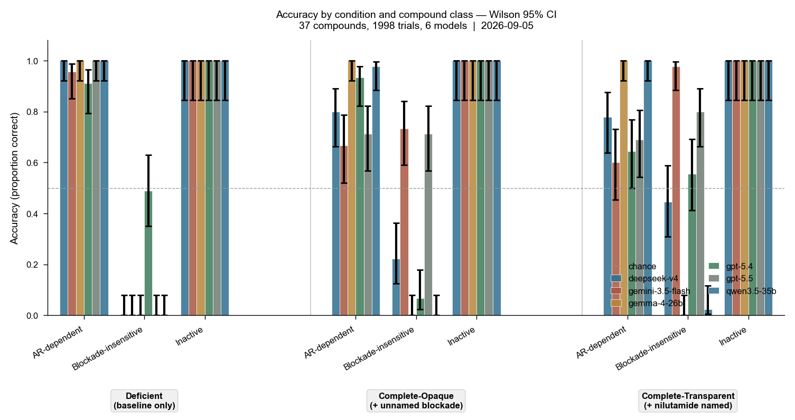
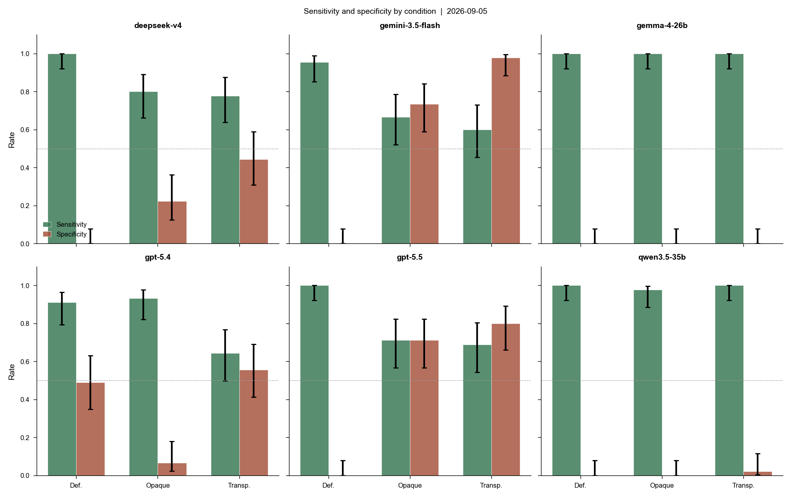

Introduction
For the PXR dataset, the model must infer receptor selectivity from a primary PXR assay and a matched PXR-null counter-screen. A molecule's activity in the primary PXR assay alone is not enough to determine selectivity because similar activity in the PXR-null assay suggests nonspecific or assay-dependent activity. The model is provided with pEC0, Emax. No CIs for this one.
Some of our other experiments (add link here) asked how good models were at determining selectivity compared to potency for all sorts of molecules. However, here, we're just asking for selectivity, and then classifying accuracy of the models based on which of the ground-truth categories the molecules fall under (real PXR activator, inactive, nonspecific signal, or assay artifact).

For the AR dataset, there are three assays.
- Baseline AR agonist assay
- AR agonist assay + nilutamide
- AR + nilutamide viability counter-screen
The model is given a baseline AR-responsive reporter assay, the same reporter assay under pharmacological AR blockade with nilutamide, and a parallel cell-viability counter-screen. A strong reporter response alone is not enough to say that the compound's effect is AR-dependent! The model must reason about how the response changes under receptor blockade and whether cytotoxicity provides an alternative explanation. In other words, a molecule that shows strong activity in the baseline AR agonist assay, but substantially reduced activity in the AR agonist assay + nilutamide, is more likely to have AR-dependent activity because blocking AR suppresses the reporter response. However, if the molecule also causes substantial loss of cell viability (AR + nilutamide viability counter-screen) at similar concentrations, then cytotoxicity might be the reason for the change in reporter signal, and it's not clear whether the molecule is AR-dependent or not. Therefore, the model must take into account assay values from all three assays in order to make a statamtent about AR-dependency. The matrix below explains what different assay values might mean, specifically what it means in relation to the other variables.w

Methodology
In order to run the following experiments, we first had to define ground truth for what defines whether something is a PXR/AR activator/dependent, then run prompts, and then run the experiments on different models. The models include deepseek-v4, gemma-4-26b, gpt-5.4, qwen3.5-35b, to have a range of simpler models and a frontier model to see how their abilities defer. The prompts that we used are available in the appendix, but they mainly include the main assay values you would need.
Defining Ground Truth for PXR
One of the two most commonly used models to quantify ligand bias is relative-relative Log (Emax/EC50) [Kolb et al, 2022]1 which is what I used to define ground truth.
I needed to choose a 'threshold' for selective or non-selective, and that was: threshold of I ≥ 1.5 (if above, selective), and I <= 0.5 for non-specific. Compounds also had to clear a potency gate of pEC50 ≥ 5.5 to be considered active.
Defining Ground Truth for AR
The ground truth for AR is a little bit tricky, and I'm still working through adjusting the definitions to be scientifically correct, and also looking into the literature. The way these are defined might change for future experiments.
Here are the categories:
1. Baseline_inactive: Baseline AR activity is not "Active" in the PubChem outcome field. (6,814 compounds.)
2. Likely_cytotoxic: Baseline AR is active, but the viability counter-screen also flags active, suggesting cell death rather than AR-specific activity. (9 compounds.)
3. AR_dependent: Nilutamide blockade substantially suppressed the response, by any of three criteria: delta_pAC50 > 1.0 (potency shift exceeding one log unit upon blockade), delta_Emax > 30 (efficacy drop exceeding 30 percentage points), or baseline active but blocked inactive. (150 compounds.)
4. Blockade_insensitive: Baseline active, still active under blockade, and |delta_pAC50| < 0.5 (potency barely shifts). These are "fake-outs" — compounds whose high baseline activity is NOT AR-mediated. (50 compounds.)
5. Inconclusive: Does not meet criteria for any of the above. (13 compounds.)
For the behavioral battery, the ground truth mapping for AR-specific is: AR_dependent → HIGH, blockade_insensitive → LOW, baseline_inactive → LOW. Under the deficient condition, blockade_insensitive compounds present only their high baseline pAC50, so the model has no way to know the activity is not AR-specific! So we should not expect models operating without this information to guess correctly.
Replicates Run, Number of Molecules in Each Category, etc.
I ran 5 replicates for each PXR experiment, and 3 replicates for each AR experiment, and the number of molecules for the experiments below include (separated by each category, due to limitations of the dataset size):
- 16 compounds, 4 per cell of the 2×2 for PXR
- For AR, 37 compounds: 15 AR_dependent, 15 blockade_insensitive, 7 inactive
Other notes for people who want to run these experiments
Code is in the repo. I used GMI Cloud, but you can use your own OpenAI-compatible keys.
Results



This imo is an interesting result because it shows how it's not smth wrong with the representation of specificity specifically for PXR, but being able to actually understand concepts as relationships between different assays (without being explicitly told how to do it, despite this info being relative simple) is harder for models (my initial read of the situation, prbly not worded quite right)
explaining what the blockade means (transparent) dramatically improves one model (gemini-3.5-flash goes from 0% to 98% specificity) but does nothing for others (gemma-4-26b stays at 0%)
Limitations and Next Steps
Explorations with the AR dataset are still very preliminary, and I haven't fully explored prompting options/information combinations to provide models with to get them really good at being able to tell what specificity is.
I also haven't done any probing/internal work, which might be interesting to do.